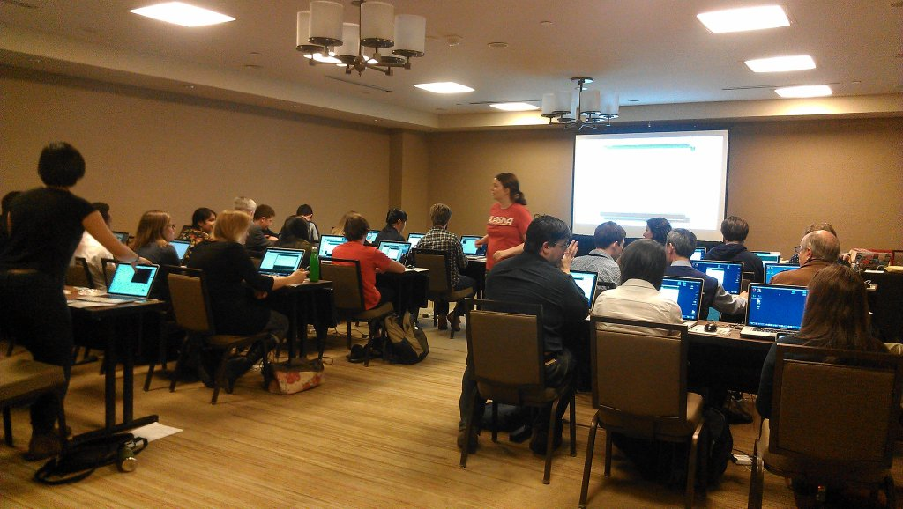

Knight-Mozilla fellow at the Guardian

As OpenNews fellow I was placed at the Guardian for 10 months. My main interests in news are sensor journalism and newsgames, I have also enjoyed helping the data team do training for reporters (teaching excel, maps, basic command line tools). I was lucky to speak and teach workshops at many journalism conferences around the world, teaching sensor journalism (arduino), ballloon/kite mapping and how to make news-games.
Scouts "Digital Maker Badge"
Client: Nesta/Scouts
I got to make activities and lesson plans that Scout leaders can carry out with their group, to make things like websites, games and robots. I got to travel around the country and test out activities with different groups, with participants ages 6 to 14. Loads of fun was had by all :D
Launches January 2014, more info
Teaching programming on a remote island
Client: Lurøy kommune

After a 2 hour flight and 5 hours on a ferry, I arrived at Lovund, where I taught HTML/CSS, Scratch and Python to kids aged 7-17 over a period of 4 days. My favourite bit was the kids sending loads of notes with secret messages on after I taught them basic encryption and decryption. One kid in particular was really sad about being there and didn't think he'd understand anything, but ended up making a website and several games by the end of it.
Code Club
in 2012 I co-founded a nationwide network of volunteer-lead after-school clubs to teach children programming, together with UX designer Clare Sutcliffe. I had the most fun going around to shcools and developing the teaching materials that were to be used by all the volunteers. There's over 3000 clubs currently running in the UK today. I had to resign due to reasons.
1.4 for Copy: An Interactive Sound Sculpture
I was given a bursary from the Writing Platform and Bath Spa university to collaborate as a creative technologist with writer Kelly Jones. We made a sound sculpture called 1.4 for copy, more info.
Happenstance
Client: Nesta/Spike Island art gallery

The Happenstance project was about putting digital thinking at the heart of arts organisations. I was lucky to be a creative technologist in residence at an art gallery, where I got to play with all kinds of gadgets and sensors, as well as running arduino workshops, teach agile methodologies, and even organise a design jam. Favourite moment: Setting up a little polaroid printer to print out pictures people took around the gallery and artist's studios, which were then exhibited in the art gallery. Take that secondary school teacher who failed me in art!
Campaign to stop littering
Client: The Urban Environment Agency, the Municipality of Oslo
The Municipality of Oslo runs yearly "attitude campaigns" to reduce littering. I showed them a video of a talking trash can done as a half-day experiment for the Fun Theory in Sweden. We decided to make a two week long campaign with the rubbish bins in downtown Oslo.
Cycling game
Client: The Urban Environment Agency, the Municipality of Oslo

The Municipality of Oslo asked me to make some flyers and a website for their upcoming campaign to encourage cycling during European Mobility week. However flyers are boring and instead I made a cycling game, using actual cycles as the controllers. They took the cycles with them on the various stands and fairs, and got people to get on the cycles and play the game to win prizes.